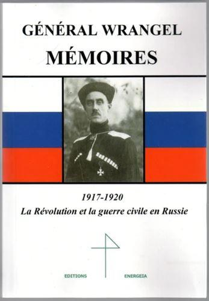
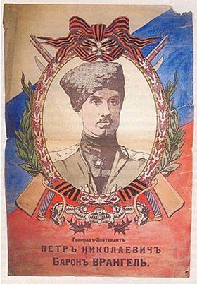
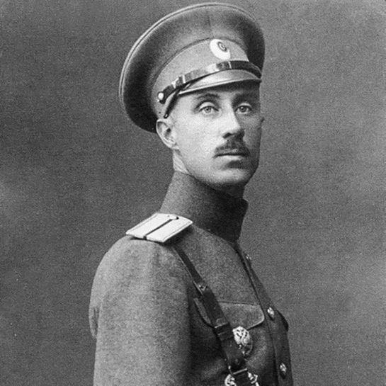
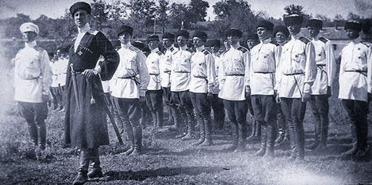

On saura grand gré aux éditions Energeia d’avoir réédité le témoignage incontournable sur la guerre civile russe constitué par les mémoires du baron Piotr Nikolaevitch Wrangel, dernier commandant de l’armée russe blanche. Cet ouvrage est cependant bien plus qu’un document historique, car il met en exergue les qualités d’un grand chef devant tenir la barre lorsque le monde s’écroule autour de lui. Au-delà, épopée d’une grande aventure, il laisse une impression durable au lecteur une fois la dernière page tournée, impression de beau et de tragique, de grand et de brisé, d’espoir et de malheur inéluctable.
La personnalité du général Wrangel, qui apparaît au fil des pages, colle tout à fait aux photographies qui nous sont parvenues du personnage : grand, fin, le regard haut, une allure aristocratique dégageant une aura d’autorité renforcée par le port d’une tcherkeska et d’une papakha. L’homme était dynamique, compétent et ambitieux. Lieutenant de cavalerie pendant la guerre russo-japonaise (1904-1905), durant laquelle il se distingua par sa bravoure, il entama le premier conflit mondial comme capitaine commandant un escadron puis, de là, franchit rapidement les échelons de la hiérarchie grâce à ses prouesses : colonel commandant un régiment en 1915, général chef d’une brigade de cavalerie deux ans plus tard.
Spectateur des désastres causés par la révolution bolchévique, viscéralement opposé aux sanglants désordres qu’elle provoquait, à la démagogie éhontée qu’elle utilisait, à ses trahisons en faveur des Allemands, il rejoignit l’Armée Blanche en 1918 pour y prendre le commandement d’une division de cavalerie. Là, il déploya une grande énergie à rétablir l’ordre et la discipline, luttant farouchement contre les pillages orchestrés par les troupes et les déviances de certains chefs qui lui étaient subordonnés.
Les jugements qu’il portait sur ces derniers éclairent non seulement la personnalité de Wrangel, avec son amour de la discipline, son idée de ce que doit être le comportement d’un officier, mais aussi sur son sens du commandement : on ne choisit ni ses soldats, ni ses officiers, mais on doit arriver à obtenir d’eux le meilleur de ce qu’ils peuvent donner, nonobstant s’il le faut leurs travers ou insuffisances ; pour cela, il faut être exemplaire, et ce d’autant plus lorsque l’on lutte contre l’écroulement d’un monde.
La première partie de l’ouvrage concerne la période août 1918-avril 1920, durant laquelle il commanda avec brio la 1e division de cavalerie, puis le 1er corps avant de prendre en main l’Armée des Volontaires du Caucase. On le suit pas à pas dans ses opérations, de la campagne du Kouban à la prise de Tsaritsyn, au fur et à mesure de ses succès avec le sentiment poignant que tout était encore jouable. On le suit aussi dans ses désaccords avec le général Anton Dénikine, commandant en chef, dont il jugeait sévèrement les choix stratégiques et politiques. Pour le reste, si l’on apprécie les considérations tactiques ou stratégiques, on se laisse surtout emporter par les charges de cavalerie et les raids en trains blindés sur les centaines de kilomètres de front de ce conflit à l’échelle continentale. Les détails et les anecdotes ne manquent pas, donnant au récit un rythme agréable et soutenu.
La seconde partie traite de la période durant laquelle le général Wrangel prit la tête de l’armée russe blanche du Sud de la Russie, au moment où les choix de Dénikine et les revers avaient mené son repli jusqu’en Crimée.
Il prit alors le titre de « régent et commandant en chef des forces armées du Sud de la Russie ».
Gardant plus que jamais sa détermination, restant réaliste sans se laisser atteindre par le caractère désespéré de la situation, il prit alors d’audacieuses décisions politiques visant à satisfaire l’ensemble des couches de la société pour les rallier au mouvement blanc, avec en particulier une réforme agraire et la reconnaissance de l’autonomie de certaines régions. Cherchant des appuis aussi bien à l’intérieur, en Ukraine notamment, qu’à l’extérieur, il déploya une importante activité diplomatique. Il ne put cependant empêcher les Anglais, soucieux d’obtenir une paix de compromis avec les Bolchéviques, de lui retirer leur appui militaire, tandis que celui obtenu de la France, trop tardif et limité, ne lui permit pas de tenir face aux armées bolchéviques qui, bien supérieures en nombre, réussirent à submerger le front et à avancer inexorablement vers la mer Noire. Les mémoires s’achèvent sur l’évacuation en bateau de la Crimée par l’armée et les populations blanches, puis leur triste devenir dans les mois qui suivirent. Je n’en dirai pas plus, ce serait faire injure à l’émotion dégagée par ces dernières pages.
N.S.
Pour acquérir l’ouvrage : Wrangel (général), Mémoires, 1917-1920, la Révolution et la guerre civile en Russie, éditions Energeia, 2019, disponible ici :
Partager cette page